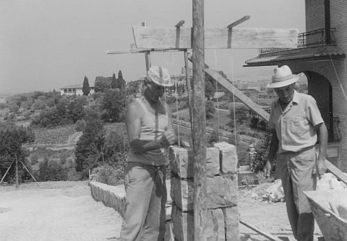

DEGLI ESPOSTI (1947-1949); fattori; Passeggeri.
Antonio Degli Esposti, fattore a Passeggeri dal 1947 al 15 giugno 1949. Viveva da solo al servizio del Sarrocchi e quando lasciò Passeggeri tornò a Firenze.
DEI (1917-1925); mezzadri; Castello; da Siena.
Nel marzo 1917 la famiglia Dei entrò al podere del Castello per rimanervi fino al 1925, quando ritornò nel Comune di Siena, da dove era arrivata. Famiglia di sette persone, col capoccio Domenico del fu Pietro, la moglie Lorella Santariecchi, i figli Gino, Ezio, Zelinda, Morando e il fratello Vittorio. Otto anni di permanenza per registrare la morte di Vittorio nel 1922, e di Domenico il 2 novembre 1923. La nascita di Elina il 13 luglio 1924, battezzata a S. Leonino, figlia di Ezio e Gina Panti delle Gallozzole, sposati a Quercegrossa il 14 aprile 1923, completano i dati di questa dimenticata famiglia.
DONNINI (1915-1918); braccianti; Leccino; da Tolena.
La breve e sfortunata vicenda umana di Pietro Donnini si concluse in un campo di prigionia, quando aveva preso dimora a Quercegrossa da alcuni anni. Pietro nasce all’Albola di Radda nel 1886 e a 22 anni, residente a S. Fedele, prende in moglie la 19enne Emma Buriani della Torre di Passeggeri, sposata nella Pieve di Vagliagli il 22 febbraio del 1908. E' un bracciante che cerca lavoro e, come ci racconta la sua storia, si sposta costantemente, accompagnato dalla giovane, buona, semplice moglie. Quattro anni dopo, e siamo al 15 novembre 1912, gli nasce a Tolena di S. Leonino la prima figlia che chiama Argia. Forse avrebbe preferito un maschio, che però non si fa aspettare. Infatti, nel luglio 1915, in un luogo non identificato Emma gli partorisce Gino. Ma il destino incomincia a girargli le spalle perché il 10 agosto del 1916 la morte si porta via il bambino di 13 mesi, a Basciano, e lì viene sepolto. In questi anni fissa la sua residenza a Quercegrossa, forse dal 1915, alla vigilia del suo arruolamento, nella casa di Brunetto Rossi al Leccino di Sotto. Arruolato dunque Pietro nell'esercito, Emma con la piccola, rimane in attesa come tutte le mogli e deve anche sbarcare il lunario e pagare l'affitto per quelle due anguste stanze. E' vivo il ricordo di una frase, ripetuta chissà quante volte in famiglia, detta da babbo Bonaventura a Brunetto:
"Che se non poteva pagare, ci avrebbe pensato lui". Gli anni di guerra trascorrono e si attende il ritorno di Pietro, ma arriva solo la comunicazione della sua prigionia e, a seguire, della sua morte, datata 11 febbraio 1918, per malattia. Ora il suo nome lo troviamo scolpito sulla lapide dei caduti: caduto all'età di 33 anni. Lasciò Emma con la piccola Argia. Caro fu il tributo di questa donna pagato alla patria: il marito, un fratello e il cognato. Ma si deve pur sopravvivere e anche mangiare, e per questo non passerà molto tempo che Emma si accompagnerà ad una altra persona, altrettanto colpita nei sentimenti: Ruggero Riversi. Da qui in avanti le due storie si intrecciano e si fondono nella famiglia Riversi. Pietro Donnini era nato il 30 giugno 1886, da Serafino fu Giuseppe e dalla Teresa Brocchi. Nacque nel popolo di S. Salvatore ad Albola e battezzato a Radda. Morì in uno sconosciuto luogo dell’Austria o della Croazia, e nessuno sa dove riposi. La figlia Argia crebbe e si formò la sua famiglia il 30 aprile 1936 con Emilio Mugnaini, già abitante all'Arginano, e tornarono nella loro casa di Bucciano.
DONZELLI (1895-1904); pigionali; Colombaiolo.
Presenti al censimento del 1901 i Donzelli abitarono al Colombaiolo fino al 3 marzo 1904. Dario Donzelli, uno dei figli dell'Ospedale, era tornato a Quercia intorno al 1895. Uomo sulla quarantina, viveva con la moglie più giovane di sedici anni, Cesira Nassi, il figlio Pietro di un anno, e il suocero Tommaso Nassi, che morirà in quella casa. Di questo piccolo nucleo familiare si registrarono due nascite: Maria (1895) e Armida, nata e morta di pochi giorni, il 25 ottobre 1897.
DONZELLINI (1955-1993); mezzadri/salariati; Arginano/Quercegrossa;
da Basciano.
Chi non ricorda Adolfo Donzellini, detto
“Foffo”? Lascio la parola a Ginetta Buti che lo sposò il 26 settembre del 1955:
"L'ho conosciuto a Santo Stefano, ed era col fratello Amos e due sorelle. Venivano dall'aretino, il babbo Amedeo Donzellini era casellante di ferrovia, la mamma si chiamava Maria". Amedeo Donzellini aveva un incarico di casellante in ferrovia. Accusato di negligenza per non aver abbassato le sbarre, Amedeo, sentendosi innocente, si licenziò e venne nelle nostre zone, per ritrovarsi salariato a S. Stefano di Basciano con la moglie Maria e l'altro figlio Amos.

Foffo Donzellini e Liseo Nencioni lavorano intorno alla loro abitazione al Poggio.
Dopo il matrimonio, Foffo si sistema in casa della moglie all’Arginano, dove c'è l'assoluto bisogno di uomini e condivide tutta la storia della famiglia Buti, che nel 1964 cessa il rapporto di mezzadria col Bindi, il quale non intende più tenerli come contadini né, tanto meno, come salariati. Si impiega allora come trattorista specializzato alla fattoria del Cimarrosti, che sta trasformando in quegli anni le colture delle terre del Casalino. Prende dimora inizialmente dal Lazzeri, dove rimane otto mesi e poi, nel 1965, restando in Quercegrossa, si trasferisce nel palazzo di Picciola. Quando si sposò, lui aveva 31 anni, e Ginetta 33. Partirono per il viaggio di nozze diretti a Colleferro, dove vennero ospitati da Beppina, una zia di Foffo. E, dopo 69 anni trascorsi nell'adempimento dei propri doveri e con tante serate passate al bar con le carte in mano, con gli amici, in allegria; dopo 38 anni di matrimonio senza scossoni, e dopo aver fatto dei sacrifici enormi per smettere di fumare, che per lui rappresentarono una grande sofferenza (come ben ricordo), il 12 luglio 1993 Foffo cessava di vivere la sua onesta esistenza. La moglie Ginetta vive ancor oggi a Quercegrossa.
DRAGONI (1962/63 - 1971 ca.); guardia; Petroio.
Alvaro Dragoni svolse per un decennio il suo incarico di "guardia" a Petroio. Quattro persone in tutto alloggiate nella fattoria dal 1962/63 ca. Lui, un brav'uomo con l’immancabile penna sul cappello da guardiacaccia, con la moglie Anna e i figli Massimo e Cinzia. Partirono nel 1971 per andare, come uomo di fattoria e casieri, nei pressi di Cedda.
Inizio pagina
Indice famiglie del '900
Indice dei Capitoli